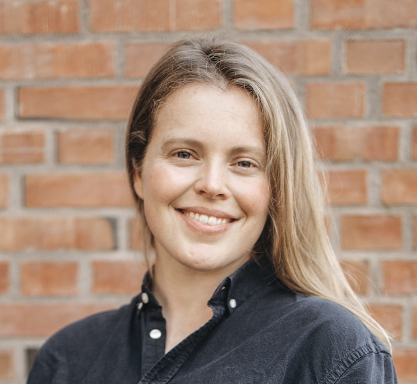

Emma Wolden
3. år IT og informasjonssystemer ved UiA
Emma har ti års praktisk erfaring fra lagerdrift hos Tine SA, med fagbrev i logistikk. Hun har også studert spansk og kulturfag i Nicaragua og Argentina, og har jobbet to år ved Deichman bibliotek.
Hun trives spesielt godt med å forstå brukerne av et system, og er opptatt av å lage løsninger som er tilgjengelige og meningsfulle for alle som skal bruke dem. Studiet har gitt henne innblikk i litt av alt, fra backend til frontend, og hun liker begge deler.
I gruppearbeid tar Emma ansvar for universell utforming, og bidrar til at løsningene fungerer godt for alle, ikke bare de fleste. Hun liker å samarbeide om å finne gode løsninger, og er opptatt av at brukerens perspektiv ikke forsvinner underveis i prosjektet.